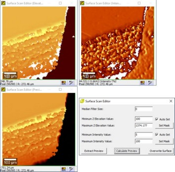

步骤
为大面积扫描定义
几何
参数。
移动到测量区域内样品上的一个点，切换到CCS物镜。
仅Mk2：在视频控制窗口中点击
TS
，对于非自动化系统：配置TrueSurface光路（插入TrueSurface耦合器，移除视频和明场耦合器）。
设置
光学距离传感器的参数。
（如果信号太弱，降低
采样率
。在样品上移动以在不同位置检查。）
在形貌校正部分中的
按CCS LA扫描学习
下设置
图像尺寸X [像素]
和
图像尺寸Y [像素]
。
点击
按CCS LA扫描学习
。
扫描后点击
编辑表面扫描
。

图1：表面扫描编辑器
必须移除Z高度低于零或强度太低的表面点。更改滤波设置并点击
计算预览
。（图1）
点击
覆盖表面
（图1）
可选：点击
提取预览
（图1）（图像可用于第14步中的导航。）
可选：在视频控制窗口的
显微镜Z
区域中点击
S:
切换到软件z。（防止通过移动显微镜Z意外改变表面相对于样品的z位置。）
如果样品的粗糙度大于200 µm，需要调整Z行程。扩展
软件z行程范围
以适应样品的粗糙度。
如果扩展Z行程太小，大面积扫描中的几何参数会变红，测量将不会开始。
切换到应该用于测量的物镜。
可选：移动到测量区域内样品上的一个点，在形貌校正中点击
到表面
。现在可以使用
示波器
在拉曼光谱上重新聚焦表面（对于非自动化系统：配置拉曼光路）。（确保
显微镜Z
切换到
U:
。）
在大面积扫描中将
形貌校正
切换到开。
对于非自动化系统：配置拉曼光路（插入输出和激光耦合器，移除视频和明场耦合器）。
点击
开始大面积扫描
。
更多信息：
形貌校正
、
光学距离传感器
、
大面积扫描
提示
CCS扫描可以使用比大面积扫描更少的像素。